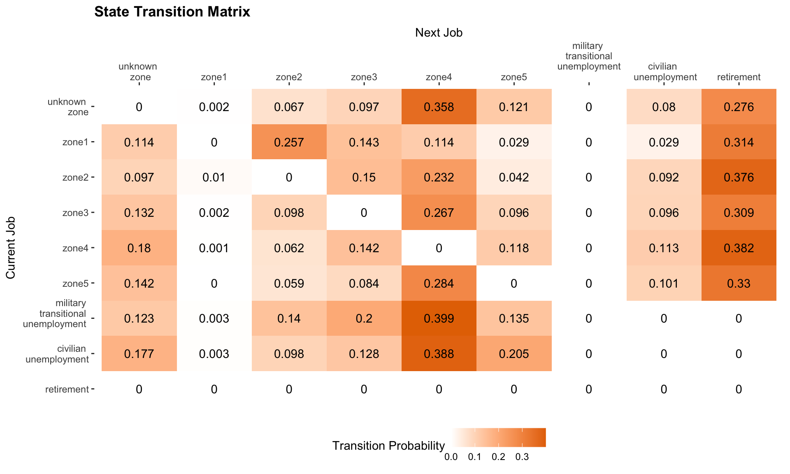
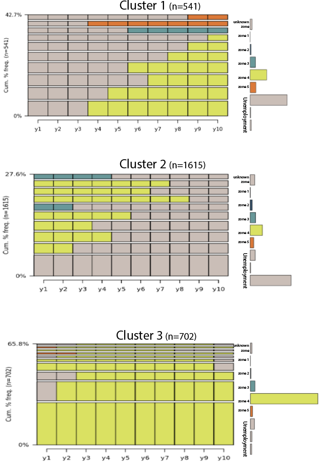
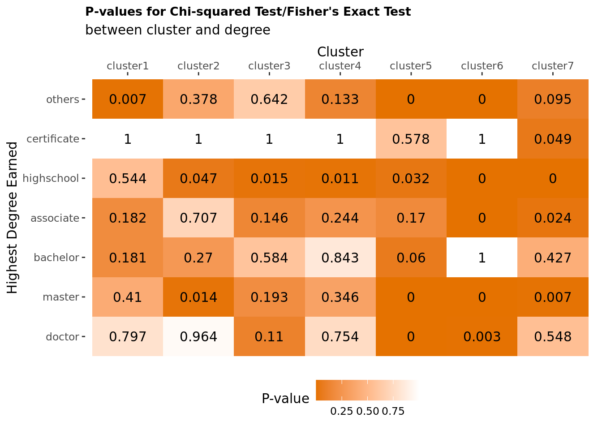
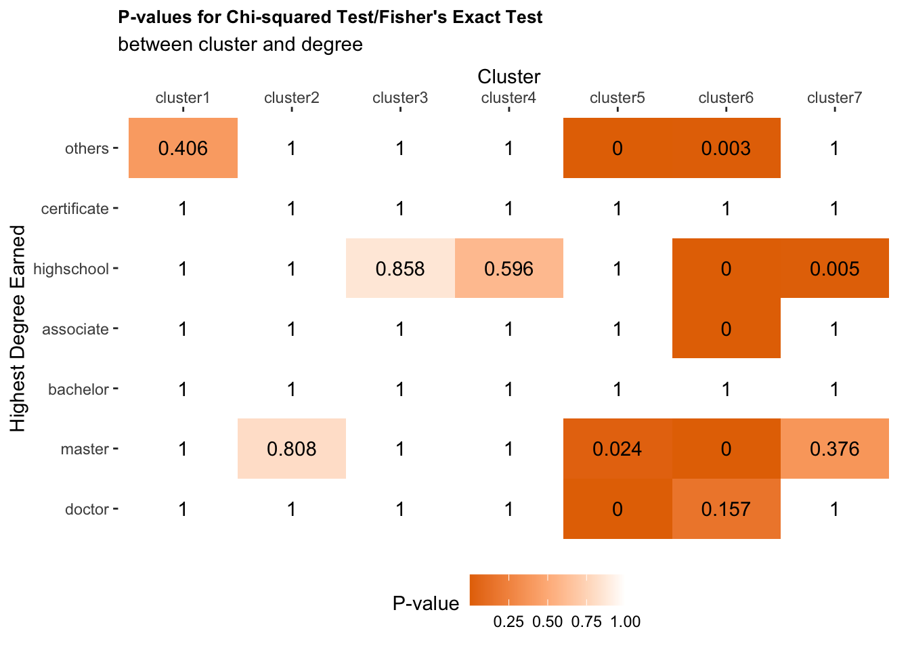

Sequence Clustering
Clustering post-military veteran career sequences and exploring these results
Transition Matrix
There are nine levels of job state: job zone (level) 1, job zone (level) 2, job zone (level) 3, job zone (level) 4, job zone (level) 5, transitional unemployment, unemployment, unemployment or retirement, and unknown job zone.
library(DT)
library(readxl)
DT <- read_excel("~/git/dspg20career/src/burningglass/states_table.xlsx")## Error: `path` does not exist: '~/git/dspg20career/src/burningglass/states_table.xlsx'datatable(DT, rownames = FALSE, caption = "Table 1. Overview of sequence states.", options = list(scrollY = "500px", dom = 't'))## Error in crosstalk::is.SharedData(data): object 'DT' not foundIn our sequence analysis, we want to categorize sequential pattern of the job levels. One approach for categorizing sequences is to compute the distance between two sequences. For example, we have two job state sequences and each sequence is composed of three states: \[S_1 = \{ \text{zone 1, zone 2, zone 3} \}\] \[S_2 = \{ \text{zone 1, zone 1, zone 3} \}\] The difference between \(S_1\) and \(S_2\) is at the second state where \(S_1\) has zone 2 while \(S_2\) has zone 1. To transform \(S_1\) to \(S_2\), we substitude zone 2 with zone 1 at state 2. We use the minimum number of substitution that is required to transform one sequence to another sequence to reflect the distance between these two sequences. This is known as "indels". However not all substitutions are the same: substitute zone 1 with zone 5 is way more costly than substituting with zone 2. Therefore, we use transition rate to estimate the cost to transform from one state to another state.
We constructed transition matrix \(T\) with dimension \(k \times k\), k being the number of job states. The transition matrix is composed of transition rates between each pair of states. \(T(i,j)\) represents the probability of a sample to convert from the current job state \(i\) to the next job state \(j\), for \(i \in [1,9], j \in [1,9]\). Thus the sum of each row is 1. Figure 1 shows the transition matrix.
Darker the color, higher the transition probability between two states. The job states on the diagnal of the transition matrix have the darkest color, meaning that our sample has a higher probability to stay in the same job state.
 \[\text{Fig 1. Year-to-Year Transition Matrix}\]
\[\text{Fig 1. Year-to-Year Transition Matrix}\]
Transition Matrix standardization
For sequence clustering, our next step is to construct a substitution-cost matrix \(SC\) using the formula \[SC(i,j) = 2 -T(i,j) -T(j,i)\]
Substitution-cost matrix reflects the cost for substituting a job state with another. \(SC(i,j)\) represent the cost for changing from the current job state \(i\) to the next job state \(j\), for \(i \in [1,9], j \in [1,9]\). We then use transition rate to construct substitution-cost matrix using the formula \[SC(i, j) = \begin{cases} 2-T(i,j)-T(j,i), & i \neq j\\ 0, & i=j \end{cases}\]
The consequence for the diagnal to have large transition probability is the consistent cost between job state \(i\) and \(j\) that \(SC(i, j)\) will be approximately 2. In order to make the difference between two different states more visible, we standardize the transition matrix by excluding the diagnal when constructing the transition matrix. Figure 2 shows the standardized transition matrix that reflects changes between states. Having diagnal as 0, we can better observe the difference of the transition probability between two different states.
 \[\text{Fig 2. State Transition Matrix}\]
Clustering
We identified 5185 post-military sequences, and there are 2113 (40.8%) distinct sequences. We identified 7 types of sequences, which are identified as clusters according to the sequence analysis. As shown in Figure 3, Cluster 1, 2, 3 are mainly composed of veterans in job zone 4. Specifically, veterans in Cluster 1 had many years' of traerans in Cluster 2 worked for a short period of time in job zone 4 and retired. Veterans in Cluster 3 worked in job zone 4-jobs for 10 years post-military.
 \[\text{Fig 3. Clusters Most Common in Job Zone 4}\]
As shown in Fig 4, we observe for the majority of the veterans in Cluster 4 had a career promotion where they started with job zone 3 and went into job zone 4. We do recognize a small proportion of the veterans in this cluster had a demotion from job zone 5 to job zone 4.
 \[\text{Fig 4. Career Promotion Cluster}\]
\[\text{Fig 4. Career Promotion Cluster}\]
As shown in Fig 5, Cluster 5, 6, 7 do no exibit a change in post-military career. Cluster 5, 6, 7 are composed of jobs in job zone 5, job zone 2, and job zone 3 respectively.
\[\text{Fig 5. Clusters Most Common in Job Zone 2, 3, 5}\]
Do veterans' education background influence their career trajectory?
To understand how veterans developed different career trajectories, we investigated whether gender and highest degree earned are associated with the career clusters.
First, let's take a look at a frequency plot shown in Figure 6. Here we are showing the number of veterans with different degrees in each of these 8 clusters. Since the majority of our veteran sample had highest degree as bachelor's and master's degree, here we present the percentage of veterans in each of the eight clusters for each highest degree earned. Thus each row adds up to 1.
 \[\text{Fig 6. Cluster Distribution for Different Levels of Education}\]
\[\text{Fig 6. Cluster Distribution for Different Levels of Education}\]
Statistical significance test
To test whether the differences we observed before are statistically significant, we performed Pearson's \(\chi^2\)-test and Fisher's exact test. Fisher's exact test is used when at least a 20% of the expected cell counts are small (< 5). These are formal test of association between two categorical variables. First, we constructed a two-way freqency table as shown in Table 1. For example, there are 44 veterans who had a high school's degree as their highest degree earned and were categorized in Cluster 2. The expected count is 34 assuming cluster and highest degree earned are independent. We are testing our hypothesis \[H_0: \text{Odds Ratio} =1\] \[H_A: \text{Odds Ratio} \neq 1\]
| Two-way Frequency Table | ||
|---|---|---|
| cluster 2 | not cluster 2 | |
| High School's degree | 44 [34] | 889 [899] |
| others | 64 [74] | 1958 [1948] |
Bonferroni correction
 \[\text{Fig 8. P-values from the Association Tests With Bonferroni Correction}\]
Benjamini & Hochberg correction

\[\text{Fig 9. P-values from the Association Tests With Benjamini & Hochberg Correction}\]
Do Female and Male Veterans have different career trajectory?
In our sample, we have 15.9% (N=824) female veterans, 84.1% (N=3666) male veterans. We conducted \(\chi^2\) test. Using 0.05 as the critical value, we conclude that female is statistically different from male in cluster 2 (p=0.0083), 5 (p<0.001), 6 (p=0.017), and 8 (0.042). 
##
## female male
## 1 70 398
## 2 91 537
## 3 37 219
## 4 74 387
## 5 316 1077
## 6 92 528
## 7 71 272
## 8 73 248## [1] 5.220941e-02 8.293374e-03 1.149379e-01 1.994392e-01 6.078961e-07
## [6] 1.739298e-02 2.729629e-01 4.198785e-02## [1] FALSE TRUE FALSE FALSE TRUE TRUE FALSE TRUEReferences
[List your references here using APA format (or at least standardize all of the references using the same format).]